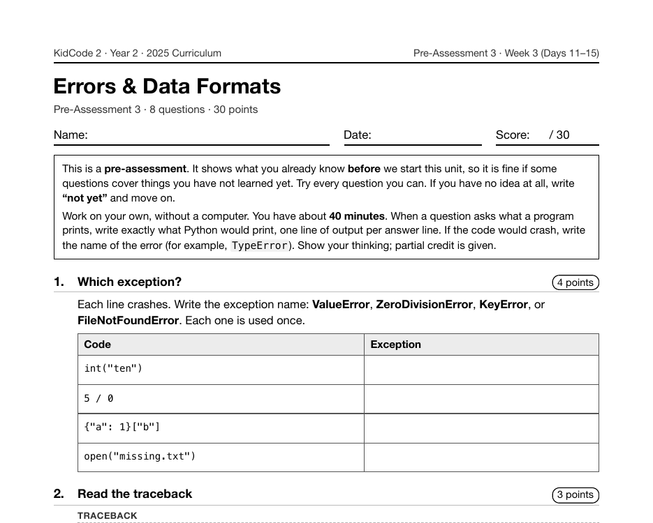

Year 2 · 2025 · Building Complexity
Project 9: Trivia Quiz 2.0
Trivia Quiz 2.0 is Project 9, on Day 15 of Year 2, and it is an upgrade of a Year 1 project on purpose. The questions move into a JSON file, high scores are saved to disk, input is protected with try/except, and every job gets its own function.
What I taught that week
From the Year 2 curriculum, Week 3: Errors & Data Formats
Day 11: try/except: When Things Go Wrong. Catching errors with try and except, and common exceptions (ValueError, ZeroDivisionError, KeyError, FileNotFoundError). Reading tracebacks. Practice: "Safe Divider".
Day 12: Bulletproof Input. Validation loops that re-ask until the input is good, else and finally blocks, and a reusable ask_number() function that no silly answer can break.
Day 13: CSV Files. Reading and writing spreadsheet-style .csv files with the csv module, rows as lists, and DictReader for rows as dictionaries. Practice: "Pet Registry".
Day 14: JSON Files. Saving and loading structured data with json.dump() and json.load(). How dictionaries and lists map onto JSON. Practice: "Game Settings" and a "Quiz Question Bank".
Day 15: Lab: Trivia Quiz 2.0. Project 3. Upgrading Year 1's quiz: questions loaded from a JSON file, high scores saved to disk, input protected with try/except, and one function per job. Pair review with a checklist.
What students built
83 students built the upgraded quiz. Every one loads its questions with json.load() and catches both a missing file (FileNotFoundError) and a damaged one (JSONDecodeError). A program from this week keeps working when its data is broken, and the Year 1 version would simply have crashed. The median program is 98 lines, against 29 for the Year 1 quiz.
One student's program
This is one real submission, shown as the student wrote it apart from the removed name header. It was chosen by a fixed rule rather than for being the best: it is the submission closest to the project's median length among those that ran cleanly and contain nothing that could identify anyone. Parts are skipped where marked with …
SCORE_FILE = "high_scores.json"
QUESTION_FILE = "questions.json"
def load_questions():
try:
with open(QUESTION_FILE) as f:
return json.load(f)
except FileNotFoundError:
print("No question file yet, creating one...")
with open(QUESTION_FILE, "w") as f:
json.dump(DEFAULT_QUESTIONS, f, indent=2)
return DEFAULT_QUESTIONS
except json.JSONDecodeError:
print("The question file is damaged, using the built-in questions.")
return DEFAULT_QUESTIONS
def load_high_scores():
try:
with open(SCORE_FILE) as f:
return json.load(f)
except (FileNotFoundError, json.JSONDecodeError):
return []
def save_high_scores(scores):
with open(SCORE_FILE, "w") as f:
json.dump(scores, f, indent=2)
def score_of(entry):
return entry["score"]
def add_score(scores, name, score):
scores.append({"name": name, "score": score})
scores.sort(key=score_of, reverse=True)
return scores[:5]
def ask_question(item):
reply = input(item["question"] + " ").strip().lower()
if reply in item["answers"]:
print("Correct!")
return True
print("Sorry, it was " + item["answers"][0] + ".")
return False
def show_high_scores(scores):
print("--- HIGH SCORES ---")
for place, entry in enumerate(scores, start=1):
print(f"{place}. {entry['name']:<12} {entry['score']}")
def play_round(questions):
score = 0
for item in questions:
if ask_question(item):
score += 1
return score
A sample run of that program (the input was typed for this page)
No question file yet, creating one... Player name: Player What has keys but cannot open locks? piano Correct! What gets wetter the more it dries? towel Correct! What has hands but cannot clap? clock Correct! What has a neck but no head? bottle Correct! What can you catch but never throw? a ball Sorry, it was cold. Player scored 4/5 --- HIGH SCORES --- 1. Player 4 Play again? (yes/no) no
The worksheet for this unit
Each unit has a pre- and post-assessment written from the same curriculum. This is the first page of the pre-assessment for the unit this project sits in: Errors & Data Formats (Week 3 (Days 11–15), 8 questions).

Where it fits
Compare with Trivia Quiz Show from Year 1. The same idea, a quiz, now carries files and error handling; the program below also sorts scores with a key function to keep a top-five leaderboard.
Looking back
Rebuilding a program students already wrote is the most direct way I know to show them what they've learned, because the only thing that changed is them. It also makes the comparison easy to check in the code: same project, more than three times the median length.